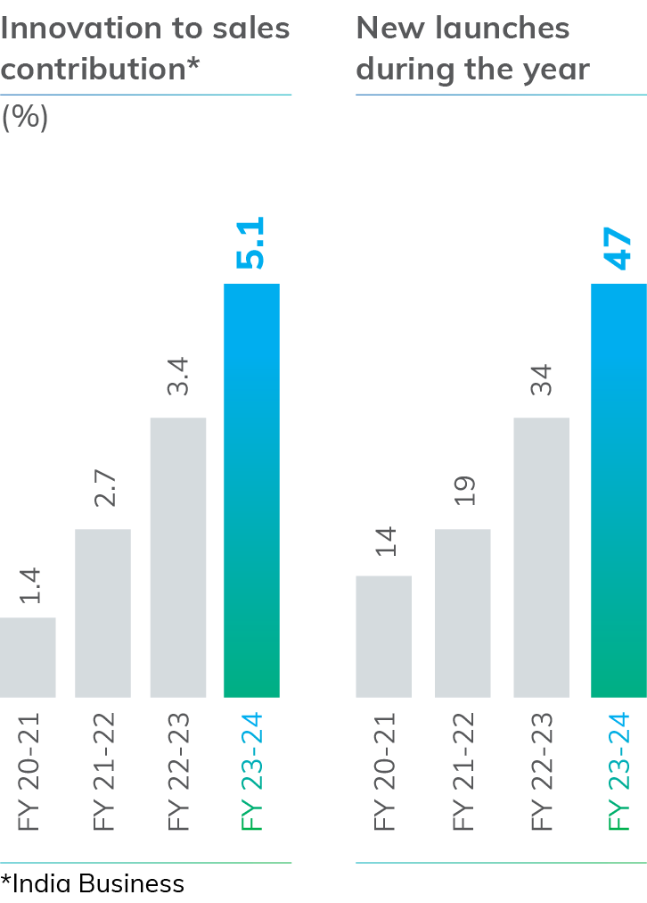

REINFORCING DIGITAL FRAMEWORK ACROSS OPERATIONS
We have built a robust digital framework to accelerate value delivery and drive operational efficiency. With seamless integration and data-driven insights, we are confident of unlocking efficiency, agility and sustainable growth in today’s dynamic market landscape.
We leverage digital insights to navigate the market with precision. From sourcing raw materials to final delivery, a seamless digital thread binds the entire supply chain, enhancing efficiency. The journey from warehouse to shelf is, today, more agile and transparent. Marketing strategies are fine-tuned through data-driven analytics, ensuring targeted campaigns and impactful consumer engagement. Additionally, digital integration extends to support functions, propelling administrative tasks with speed and accuracy.
Intelligent procurement
We aimed to build a best-in-class commodity platform that would enable the delivery of competitive raw material prices across categories. Our in-house platform—Infiniti (an AI-enabled end-to-end commodity procurement platform)—enabled seamless integration with real-time data analytics. With Infiniti, there has been an enhanced visibility across purchasing channels, minimising individual biases, optimising the progression of each offer through the streamlined purchase process. Going forward, we will leverage Infiniti data to drive supply chain behaviour, analyse historical and real-time data to build agility into the system and respond to a rapidly changing commodity environment.
REVVING UP SALES AND DISTRIBUTION
We have transformed our sales and distribution ecosystem supported by analytics to ensure improved forecasts and automated ordering. The introduction of features, such as ‘Geotagging’, has enhanced service precision, while data tools, like ‘Profitability Waterfall’, are now guiding smart decision-making. Our customer-centric approach helped us ensure smooth onboarding, effective incentives and meticulous asset tracking for a responsive system.
1.6 Mn
Outlets directly serviced by distributors (1000+ distributors added in the current fiscal)
1 days
Time to onboard a new distributor
5 mins
Primary order creation time
MAVIC – Transforming our Go-To-Market platform
MAVIC, our new Go-To-Market (GTM) platform, is designed to revolutionise our ways of working and streamline processes. This is a next-gen Distributor Management platform and Sales workforce mobile app. It is aimed at enhancing operational efficiency, improving sales performance and providing a superior user experience. It empowers our distributors and salesforce with real time data, enabling them to make informed decisions, manage tasks effectively and, ultimately, drive business growth.

What sets
MAVIC
apart?
Sales transformation with AI-ML
MAVIC is a complete sales transformation tool that leverages advanced AI-ML technology. This helps overcome scalability challenges and introduces real time data analytics for a robust sales evolution.
Cutting-edge real time analysis
It focuses on real time price analysis and prediction, setting new standards and leading the transformation of secondary data into actionable insights.
SAFEGUARDING OUR DIGITAL INFRASTRUCTURE
We continue to maintain a strong cybersecurity governance by nurturing a security-aware culture, featuring regular training, phishing simulations and tech-enabled solutions for suspicious activity reporting. Continuous vulnerability assessments, penetration testing and red team assessments proactively address potential risks. Data loss prevention and classification measures safeguard sensitive data and mobile device management enhances security for organisational data on mobile devices. Business impact assessments analyse application sensitivity, contributing to effective risk management with insights. Our Next-Generation Security Operations Centre enables advanced threat detection and rapid response.
ACCELERATING INNOVATION
Innovation is critical to our growth agenda. We are focused on the scale and speed of innovation, with emphasis on key consumer trends, such as health and wellness, convenience and premiumisation. We have forayed into new categories, launched first-of-their- kind products and accomplished considerable value enhancement in portfolio extensions.
Tata Soulfull Ragi Bites Choco Sticks
Launched as a healthier, ‘better for you’ snack option, our new Choco Sticks are made from indigenous millets, like Ragi, offering a no Maida, millet-based alternative for children.
FUTURE FOCUSED
Our innovation agenda during the reporting period focused on steadily enhancing innovation’s contribution to sales. We identified the right business partners and used their capabilities to pave the way for an agile response to new business aspirations while we continued to explore additional categories, resulting in the acceleration of new product launches.
Outcomes of our innovation strategy
Our innovation strategy accelerated new product launches to swiftly bring innovative offerings to the market to address evolving customer aspirations.

Tata Sampann South Hing
As part of our localisation efforts, we introduced South Hing, catering specifically to the culinary preferences of the Southern States, enhancing regional flavour profiles.
Our innovation strategy and processes enabled the swift launch of Tata Simply Better Cold Pressed Oil within a remarkable
120 days
from conceptualisation to market, we achieved record-breaking sales in its first month.

Himalayan Saffron
Strengthening the Himalayan brand, we launched premium Himalayan Saffron, partnering with Kashmiri farmers to offer trusted, high-quality saffron sourced directly from the Himalayas.

100+
launches in last 3 years
5X
growth in Innovation India* revenue since FY 2020-21

Tata Edge Business Impact Innovation Award
Tata Consumer Products has recently won the Tata Innovation Edge Best Practices Award for ‘Business Impact Innovation’,
a category which celebrates the novelty and business impact of innovation to a company’s growth journey.
Enabled by our investments in best- in-class R&D infrastructure, well- designed Innovation management process supported by robust governance mechanism and focus on innovation across categories.
Outcomes of our innovation strategy
In advancing our innovation strategy, we have strengthened innovation management and governance through digitalisation, implementing interventions at various levels to accelerate project execution and streamline processes across categories. The deployment of our bespoke digital tool, VEGA, enhanced governance with a cohesive and efficient approach to drive innovation initiatives.
RAMPING UP R&D CAPABILITIES
We have made significant strides in building robust research and development capabilities, emphasising science-based innovations and IP generation. Our in-house consumer sensory expert panel enhances our understanding of the product portfolio, prioritising consumer input in decision-making. Additionally, our intensified focus on research platforms involves comprehensive studies, such as imaging, mineral profiling, and in-vitro digestibility assessments and unlocking disruptive innovations and claims which are science led.
 R&D Foods Innocentre, Mumbai
R&D Foods Innocentre, Mumbai
 World class R&D Centre of
World class R&D Centre of
Excellence, Bengaluru
 Process Excellence Centre,
Process Excellence Centre,
Sri City
R&D collaborations
We strategically partnered with prestigious academic institutions, including IITs, National Institute of Food Technology Entrepreneurship and Management (NIFTEM-
Kundli), Central Food Technological Research Institute, Defence Food Research Laboratory, Central Salt and Marine Chemicals Research Institute and Central Scientific Instruments Organisation, both nationally and internationally. Through these collaborations, we focused on addressing specific problem statements related to our present business priorities and future innovation goals.
For the first time, we initiated a
joint patent filing with CSIR (Council of Scientific and Industrial Research Development) lab for a novel taste scale development method.